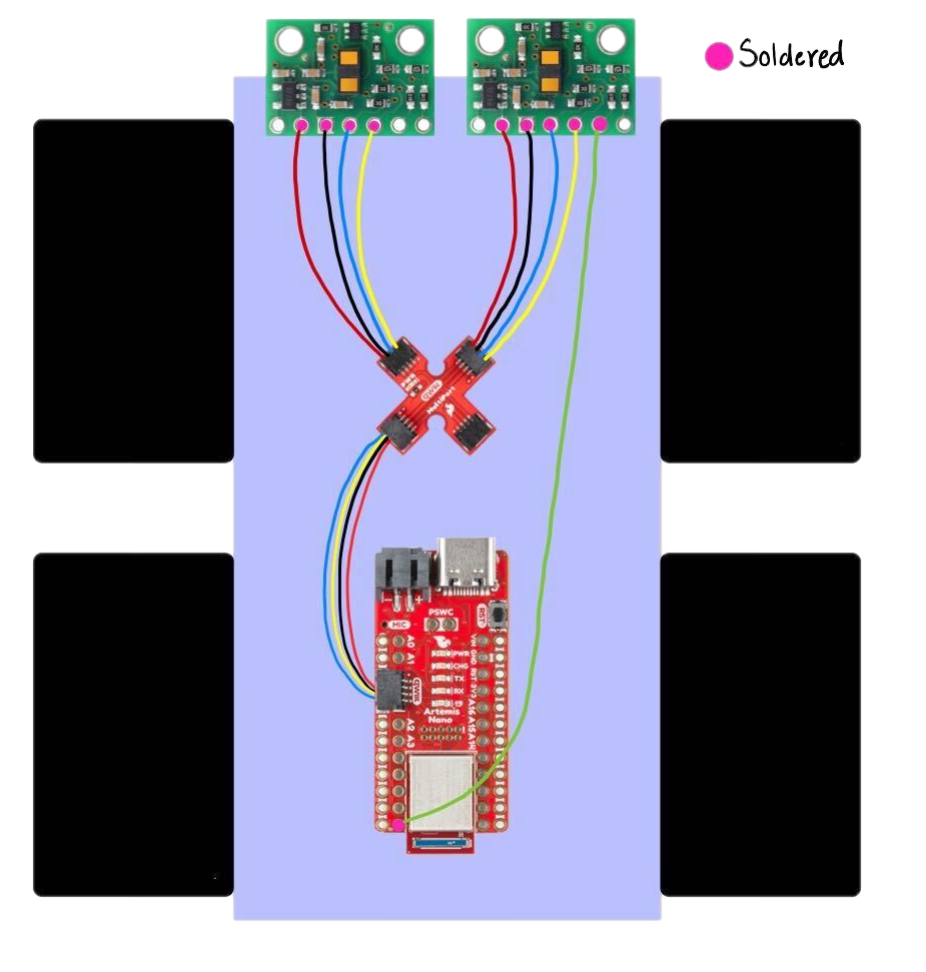
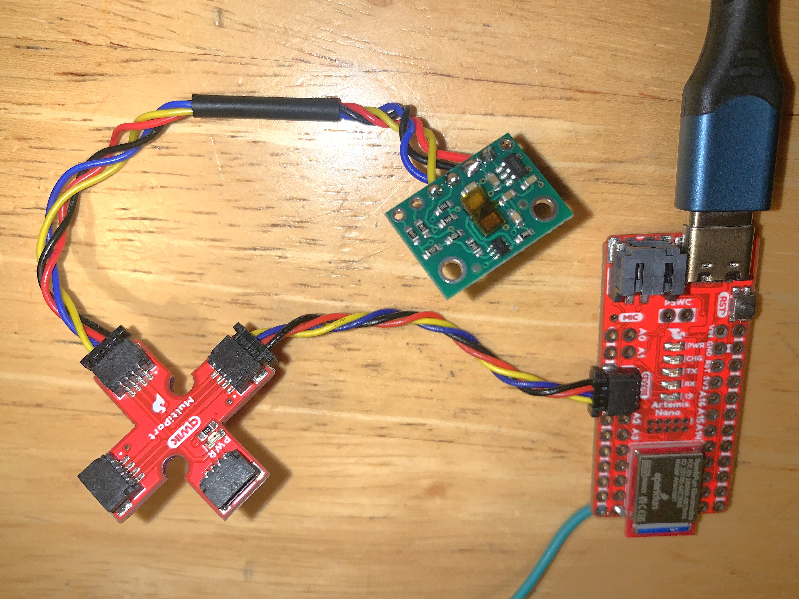
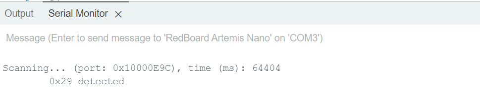
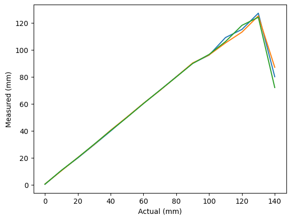
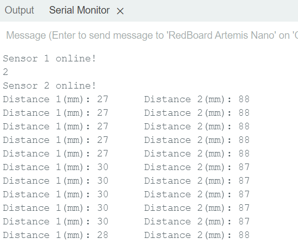
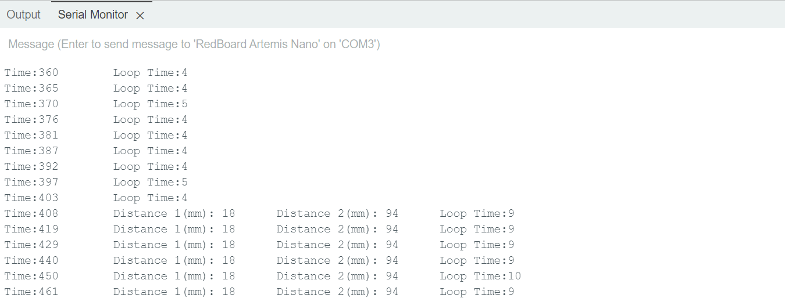
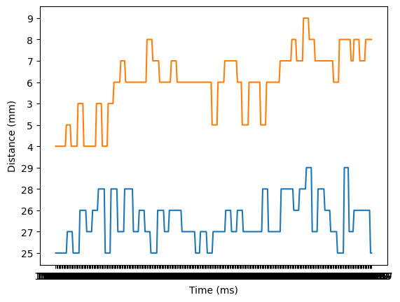

Lab 3 TOF Sensors
The goal of this lab was to connect the TOF sensors to the artemis and test the range and accuracy.
Prelab
I first looked through the TOF sensors (VL53L1X) datasheet. I found that the default I2C address is 0x29. I then looked through the pin functions and found that the sensor can be turned off using the XSHUT pin. This is useful because in order to communicate with two sensors, their I2C address should be different. One sensor can be shut off so that there is only 1 device on the I2C line and its address can be changed.
I decided to place both sensors on the front of the robot so that the readings are more accurate. Two sensors reading the same distance and averaged will be more resistant to error. I looked through the available connectors and decided to use the longer cables for the sensors. I planned to wire everything up as shown.
Task 1: Connect First TOF
I cut off one side of the QWIIC connector and soldered it to the TOF. I checked the QWIIC connector datasheet to determine which color mapped to SDA and SCL. I soldered it in such a way that the sensor face is not obstructed. I attached the other end to the QWIIC breakout board and then that to the Artemis.
I then installed the SparkFun VL53L1X arduino library. I ran the wire_I2C Apollo example to check the address of the device. This matched the address on the datasheet.
Task 2: Read From First TOF
The sensors have three modes, short, medium, and long. The short mode works better when there is more ambient light and it has a maximum distance of 1.3m. Because it is less error prone in high light, it seems like a better option, and 1.3m seems sufficient, however, that might change based on future labs. Since both are being placed on the front of the robot, putting one in long mode and the other in short might be a good option.
I ran the ReadDistace example from the SparkFun library. Once I ensured that this was working, I modified the code a to get data to plot. I took samples 5cm apart from 0cm to 150cm, I got 10 readings for each. I set up a tape measure and pointed the TOF against a wall. The readings were accurate until about 130 cm and then the values started dropping. This is the expected behavior in short mode.
I also added code to find the ranging time. I found the time with and without .stopRanging(). With .stopRanging() it averaged out to 95ms and without it was 93ms.
Task 3: Two TOFs
I added the next TOF as described previously, I used the XSHUT pin to turn this sensor off and change the address of the other sensor. I soldered pin 8 of the Artemis to the TOF XSHUT. I ensured that the readings of the two were similar when placed in similar positions.
Task 4: TOF Speed
To ensure that readings were taken as fast as possible, I removed .stopRanging() and moved .startRanging() to the setup so that it only runs once. I used .checkForDataReady() to only print the readings when a new one is ready. This ensures that the code does not hang waiting for a reading. I also added code to print the timestamp, and this shows that the loop runs even when there are no sensor readings as sometimes the timestamp is printed multiple times without sensor readings. I kept track of the time when the loop was entered and after the readings were taken to see how quickly the loop executes. It seemed to take between 9ms and 10ms. We can see that the loop time when readings were not ready was 4-5ms so the readings themselves take half the time which is limiting the speed. However, this is a very good sample rate.
Task 5: Send Data to Computer
I modified my code from lab 2 so that I could send TOF data from the Artemis to the computer via bluetooth. I added all the setup code I wrote for this lab to ble_arduino.ino and then I added a case for GET_TOF_5s. I collected data from both sensors for 5 seconds. I sent back a timestamped string containing a reading from each sensor.
On the computer side I created a handler for the TOF data. I created 3 arrays, 1 for time, 1 for TOF1 data, and 1 for TOF2 data. In the handler I parsed through the received byte array and added the appropriate parts of it to the appropriate arrays. I then used matplot.lib to plot both the distances over time.
